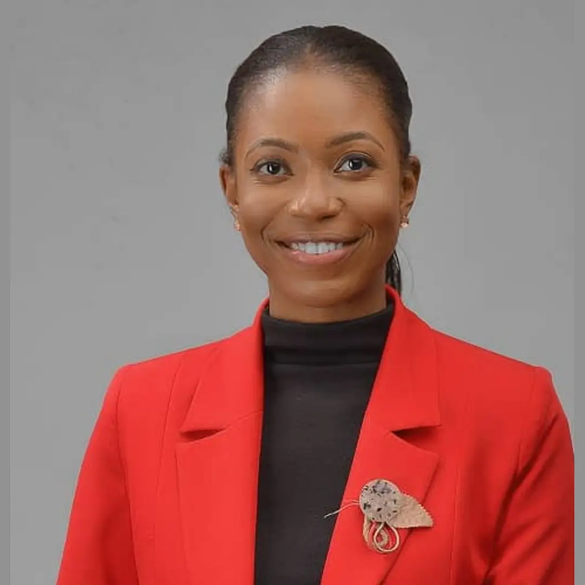
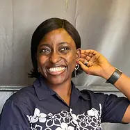
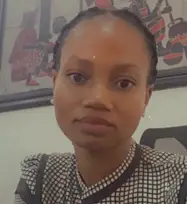
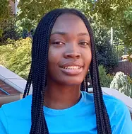

Connecting early-career African women with experienced mentors and fostering a community of growth and empowerment.

Co-Founder & Chief Executive Officer
Co-Founder & Programme Coordinator
Engagement Officer

Product Designer
Content Creator
Communications Manager

Assistant Communications Manager
Administrative and Technical Officer

Grants Manager
Grants Manager & Partnership Coordinator

Assistant Administrative Officer
Program and Evaluation Officer